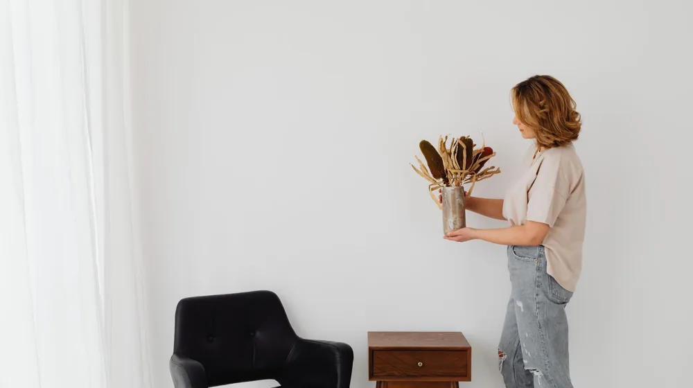

복잡한 삶 탈출! 미니멀 라이프, 지금 당장 시작하는 5가지 실천법
사진: RDNE Stock project / Pexels (무료 이미지, 출처 표기)
미니멀 라이프, 왜 시작해야 할까요?

정신없이 쌓여가는 물건과 할 일에 지치셨나요? 더 이상 복잡함에 휩쓸리지 않고, 진짜 나에게 중요한 것에 집중하며 살고 싶은 욕구가 커지고 있습니다. 미니멀 라이프는 단순히 물건을 비우는 것을 넘어, 삶의 불필요한 부분을 덜어내고 더욱 의미 있는 경험과 관계, 그리고 자신의 성장에 집중하는 라이프스타일입니다.
이러한 삶의 방식은 스트레스와 피로도를 낮추고, 결정을 내리는 데 필요한 시간과 에너지를 절약하게 합니다. 물건에 대한 집착에서 벗어나 진정한 자유를 얻고, 나아가 환경 보호에도 기여할 수 있다는 점에서 많은 사람의 주목을 받고 있습니다.
당장 실천할 수 있는 미니멀 라이프 아이디어 5가지
미니멀 라이프는 거창한 변화가 아닌, 일상 속 작은 실천에서 시작됩니다. 2026년 11월 기준으로 많은 사람이 효과를 본 검증된 아이디어들을 소개합니다. 이 중 하나라도 지금 바로 시도해보세요.
- 1. 물건 비우기: '넘치는 것'부터 시작하세요
옷장, 서랍, 책상 위 등 눈에 띄게 복잡한 공간 한 곳을 정해 비우기를 시작합니다. 특히 1년 이상 사용하지 않았거나, 언제 샀는지 기억조차 나지 않는 물건을 우선적으로 정리하는 것이 좋습니다. '버릴까 말까' 고민되는 물건은 상자에 담아 3개월 뒤 다시 판단하는 '타임아웃 박스' 전략도 유용합니다. - 2. 디지털 공간 정리: 불필요한 알림은 꺼두세요
스마트폰 알림을 최소화하고, 사용하지 않는 앱을 삭제하며, 무의미한 구독 서비스(뉴스레터, 쇼핑몰 알림 등)를 해지합니다. 불필요한 디지털 정보는 우리의 집중력을 흐트러뜨리고 피로감을 높입니다. 필요한 정보만 받아보도록 설정하면 삶의 질이 크게 향상됩니다. - 3. 의식적인 소비: '충동구매'를 '계획구매'로 바꾸세요
새로운 물건을 구매하기 전에 '정말 필요한가?', '다른 대안은 없는가?'를 며칠간 고민해봅니다. 구매 목록을 미리 작성하고, 한 번에 여러 개를 사기보다 꼭 필요한 것만 최소한으로 구매하는 습관을 들여보세요. 불필요한 물건이 집으로 들어오는 것을 막는 가장 효과적인 방법입니다. - 4. 시간 비우기: 일정표에 '여백'을 만드세요
무리하게 일정을 채우기보다 의도적으로 빈 시간을 만들어보세요. 이 시간은 휴식을 취하거나, 좋아하는 취미 활동을 하거나, 생각할 여유를 주는 데 사용될 수 있습니다. 때로는 단호하게 '거절'하는 용기가 더 많은 자유를 가져다줄 것입니다. - 5. 마음 비우기: 나를 힘들게 하는 관계와 생각은 잠시 멈춤
물건뿐 아니라 부정적인 감정이나 관계도 미니멀 라이프의 대상이 될 수 있습니다. 스스로를 힘들게 하는 생각 패턴이나 불필요한 갈등을 유발하는 관계에 대해 다시 생각해보고, 잠시 거리를 두는 시간을 가져보는 것도 좋습니다. 명상이나 일기 쓰기는 마음을 정리하는 데 큰 도움이 됩니다.
미니멀 라이프 실천 시 놓치기 쉬운 3가지 주의사항
미니멀 라이프를 시작할 때 흔히 저지르는 실수들이 있습니다. 다음 세 가지 주의사항을 미리 알고 건강하고 지속 가능한 미니멀 라이프를 만들어가세요.
- 극단적인 강박은 오히려 독이 됩니다: 모든 물건을 없애고 텅 빈 공간에서 살아야 한다는 강박에 시달릴 필요는 없습니다. 미니멀 라이프의 본질은 '덜어냄' 자체가 아니라 '나에게 중요한 것에 집중'하는 것입니다.
- '버리기'에만 집중하면 쉽게 지칩니다: 무조건 버리는 행위 자체가 목적이 되면 금방 지치거나 허무함을 느낄 수 있습니다. 비워낸 자리에 어떤 가치(경험, 배움, 관계 등)를 채워 넣을 것인지 미리 생각해두면 동기 부여에 큰 도움이 됩니다.
- 주변 사람들과의 소통이 중요합니다: 특히 가족이나 동거인이 있다면, 미니멀 라이프의 취지와 목표를 미리 설명하고 이해를 구하는 것이 좋습니다. 혼자만의 기준으로 물건을 정리하다가 갈등이 생길 수 있으므로, 서로의 의견을 존중하는 자세가 중요합니다.
나에게 맞는 미니멀 라이프, 핵심은 '비우기'보다 '채우기'
미니멀 라이프는 정답이 정해진 삶의 방식이 아닙니다. 사람마다 중요하게 생각하는 가치와 필요한 물건의 기준이 다르기 때문입니다. 중요한 것은 타인의 기준을 맹목적으로 따르기보다, 나에게 진정으로 필요한 것이 무엇인지 탐색하고, 그것으로 삶을 채워나가는 과정입니다.
불필요한 것을 덜어내면서 생기는 공간과 시간, 에너지를 내가 진정으로 가치를 느끼는 활동이나 사람과의 관계, 자기 계발에 투자하는 데 집중하세요. '덜어냄'의 미학을 통해 '풍요로움'을 경험하는 것이 미니멀 라이프의 진정한 목표입니다.
FAQ: 미니멀 라이프에 대해 자주 묻는 질문
- Q1: 미니멀 라이프, 어디서부터 시작해야 할까요?
- 가장 쉽게 시작할 수 있는 곳은 '자주 사용하는 공간'이나 '작은 서랍 하나'입니다. 부담 없이 시작해서 성취감을 느끼는 것이 중요합니다. 예를 들어, 책상 위 잡동사니를 치우거나, 매일 입는 옷 중 필요 없는 것을 정리하는 것부터 시작해보세요.
- Q2: 비우기 아까운 물건은 어떻게 하나요?
- 오랜 추억이 담긴 물건이나 선물받은 물건은 버리기 어렵습니다. 이런 물건들은 작은 상자에 모아 보관하거나, 사진으로 남겨두고 실물은 꼭 필요한 최소한만 간직하는 방법을 고려해볼 수 있습니다. 중요한 것은 물건 자체가 아니라 그 물건에 담긴 의미와 추억입니다.
- Q3: 가족이 미니멀 라이프에 협조하지 않으면 어떻게 하죠?
- 가족 구성원 모두에게 미니멀 라이프를 강요하기는 어렵습니다. 우선 나만의 공간이나 내가 관리하는 물건부터 적용해보며, 미니멀 라이프가 주는 긍정적인 변화(정돈된 공간, 여유로운 태도 등)를 직접 보여주는 것이 효과적입니다. 시간이 지나면 가족들도 긍정적인 영향을 받을 수 있습니다.
🔗 이 글도 함께 보면 좋아요: 미니멀 라이프, 지금 당장 시작하는 5단계 가이드: 복잡한 일상 정리의 시작